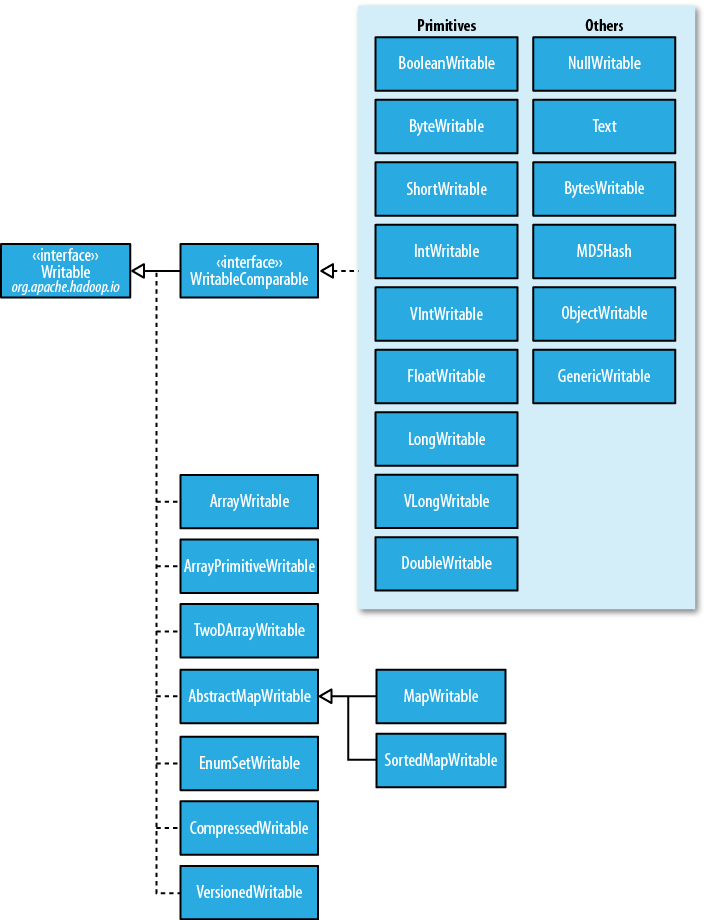
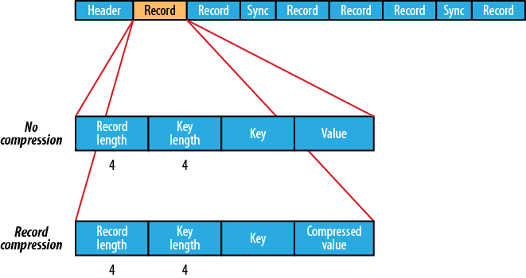
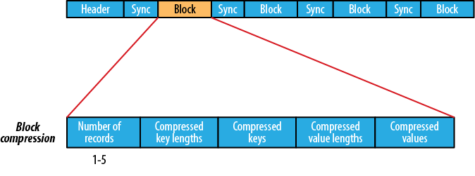

为了保证数据不丢失和损坏，在写入或读出数据时进行校验
校验和checksum:
写入时:
读取时:
datanode对checksum进行定期验证:
修复损坏的block:
关闭checksum验证:
Hadoop中的LocalFileSystem类负责执行客户端的文件验证
filename 的文件时
.filename.crc, 这种行为是透明的
filename 每一个chunk的checksum
禁止验证
可以禁止验证，特别是当底层系统已经支持的情况下，这时可以 使用RawLocalFileSystem代替LocalFilesystem
Configuration conf = ...
FileSystem fs = new RawLocalFileSystem();
fs.initialize(null, conf);
LocalFileSystem使用ChecksumFileSystem去做这它的工作（晕死，有完没完)
ChecksumFileSystem很容易给其他的文件系统添加文件验证的功能，它其实是FileSystem类的一个包装类Wrapper
FileSystem rawFs = ...
FileSystem checksummedFs = new ChecksumFileSystem(rawFs);
文件压缩的两大好处:
常用压缩格式:
| Compression format | Tool | Algorithm | Filename extension | Splittable? |
|---|---|---|---|---|
| DEFLATE | N/A | DEFLATE | .deflate | No |
| gzip | gzip | DEFLATE | .gz | No |
| bzip2 | bzip2 | bzip2 | .bz2 | Yes |
| LZO | lzop | LZO | .lzo | No(可以预建切分索引，以支持切分） |
| LZ4 | N/A | LZ4 | .lz4 | No |
| Snappy | N/A | Snappy | .snappy | No |
| Compression format | Hadoop CompressionCodec |
|---|---|
| DEFLATE | org.apache.hadoop.io.compress.DefaultCodec |
| gzip | org.apache.hadoop.io.compress.GzipCodec |
| bzip2 | org.apache.hadoop.io.compress.BZip2Codec |
| LZO | com.hadoop.compression.lzo.LzopCodec |
| LZ4 | org.apache.hadoop.io.compress.Lz4Codec |
| Snappy | org.apache.hadoop.io.compress.SnappyCodec |
使用CompressionCodec对流进行压缩与解压:
使用CompressionCodecFactory推断CompressionCodec:
原生类库Native Library: 为了性能，推荐使用原生类库进行解压和压缩。
lib/native 下
public static void main(String[] args) throws Exception {
String codecClassname = args[0];
Class<?> codecClass = Class.forName(codecClassname);
Configuration conf = new Configuration();
CompressionCodec codec = (CompressionCodec)
CodecPool.ReflectionUtils.newInstance(codecClass, conf);
Compressor compressor = null;
try {
compressor = CodecPool.getCompressor(codec);
CompressionOutputStream out =
codec.createOutputStream(System.out, compressor);
IOUtils.copyBytes(System.in, out, 4096, false);
out.finish();
} finally {
CodecPool.returnCompressor(compressor);
}
}
当被压缩的数据要被MapReduce使用时，该压缩算法是否支持切片将变的十分重要.
使用哪种压缩格式？
输入:
输出:
mapred.output.compress 来指定， true or false
mapred.output.compression.codec 来指定所使用的Codec
FileOutputFormat.setCompressOutput(job, true);
FileOutputFormat.setOutputCompressorClass(job, GzipCodec.class);
MapReduce compression properties:
| Property name | Type | Default value | Description | |
|---|---|---|---|---|
| mapred.output.compress | boolean | false | Compress outputs | |
| mapred.output.compression.codec | Class name | org.apache.hadoop.io.compress.DefaultCodec | The compression codec to use for outputs | |
| mapred.output.compression.type | String | RECORD | The type of compression to use for SequenceFile outputs: NONE, RECORD, or BLOCK |
压缩Map输出Compressing Map Output:
| Property name | Type | Default value | Description |
|---|---|---|---|
| mapred.compress.map.output | boolean | false | Compress map outputs |
| mapred.map.output.compression.codec | Class | org.apache.hadoop.io.compress.DefaultCodec | The compression codec to use for map output |
Configuration conf = new Configuration();
conf.setBoolean("mapred.compress.map.output", true);
conf.setClass("mapred.map.output.compression.codec", GzipCodec.class,
CompressionCodec.class);
Job job = new Job(conf);
序列化Serialization: 将结构化数据转化为字节流
反序列化Deserailization: 将字节流转化回结构化数据
序列化经常用于两个方面 进程间通信Interproess communication 和 永久存储Persistent storage
Hadoop使用RPC进行不同结点间的定义，RPC协议对消息进行Serialization和Deserialization
不管通信还是永久存储对序列化格式都有如下要求（但解释的侧重点不同）：
Hadoop使用自己的序列化格式Writable, 紧凑，快速，但很难被其他的语言所扩展
两个方法:
public interface Writable {
void write(DataOutput out) throws IOException;
void readFields(DataInput in) throws IOException;
}
WritableComparable and comparators:
package org.apache.hadoop.io;
public interface WritableComparable<T> extends Writable, Comparable<T> {
}
package org.apache.hadoop.io;
import java.util.Comparator;
public interface RawComparator<T> extends Comparator<T> {
public int compare(byte[] b1, int s1, int l1, byte[] b2, int s2, int l2);
}
//获取用于IntWritable的Comparator
RawComparator<IntWritable> comparator = WritableComparator.get(IntWritable.class);
IntWritable w1 = new IntWritable(163);
IntWritable w2 = new IntWritable(67);
assertThat(comparator.compare(w1, w2), greaterThan(0));
//OR:
byte[] b1 = serialize(w1);
byte[] b2 = serialize(w2);
assertThat(comparator.compare(b1, 0, b1.length, b2, 0, b2.length),
greaterThan(0));
在 org.apache.hadoop.io 里有丰富的Writable类。

整数编码:
IntWritable and LongWritable
VIntWritable and VLongWritable
Text:
BytesWritable:
NullWritable:
NullWritable.get()a 获得
ObjectWritable:
Writable集合类:
ArrayWritable, ArrayPrimitiveWritable, TwoDArrayWritable, MapWritable, SortedMapWritable, EnumSetWritable.
public class TextArrayWritable extends ArrayWritable {
public TextArrayWritable() {
super(Text.class);
}
}
自定义Writable类型:
org.apache.hadoop.io.serializer.Serialization
io.serializations 指定支持的 序列化框架
序列第IDL Interface Description Language
public static void main(String[] args) throws IOException {
Schema.Parser parser = new Schema.Parser();
Schema schema = parser.parse(Demo.class.getResourceAsStream("/StringPair.avsc"));
GenericRecord datum = new GenericData.Record(schema);
datum.put("left", "L");
datum.put("right", "R");
ByteArrayOutputStream out = new ByteArrayOutputStream();
DatumWriter<GenericRecord> writer = new GenericDatumWriter<GenericRecord>(schema);
Encoder encoder = EncoderFactory.get().binaryEncoder(out, null);
writer.write(datum, encoder);
encoder.flush();
out.close();
DatumReader<GenericRecord> reader = new GenericDatumReader<GenericRecord>(schema);
Decoder decoder = DecoderFactory.get().binaryDecoder(out.toByteArray(), null);
GenericRecord result = reader.read(null, decoder);
assertThat(result.get("left").toString(), is("L"));
assertThat(result.get("right").toString(), is("R"));
System.out.println(result.get("left").toString());
}
File file = new File("data.avro");
DatumWriter<GenericRecord> writer = new GenericDatumWriter<GenericRecord>(schema);
DataFileWriter<GenericRecord> dataFileWriter = new DataFileWriter<GenericRecord>(writer);
dataFileWriter.create(schema, file);
dataFileWriter.append(datum);
dataFileWriter.close();
DatumReader<GenericRecord> reader = new GenericDatumReader<GenericRecord>();
DataFileReader<GenericRecord> dataFileReader =
new DataFileReader<GenericRecord>(file, reader);
assertThat("Schema is the same", schema, is(dataFileReader.getSchema()));
GenericRecord record = null;
while (dataFileReader.hasNext()) {
record = dataFileReader.next(record);
// process record
}
| New schema | Writer | Reader | Action |
|---|---|---|---|
| Added field | Old | New | The reader uses the default value of the new field, since it is not written by the writer. |
| New | Old | The reader does not know about the new field written by the writer, so it is ignored(projection). | |
| Removed field | Old | New | The reader ignores the removed field (projection). |
| New | Old | The removed field is not written by the writer. If the old schema had a default defined for the field, the reader uses this; otherwise, it gets an error. In this case, it is best to update the reader’s schema, either at the same time as or before the writer’s. |
Writing a SequenceFile:
public class SequenceFileWriteDemo {
private static final String[] DATA = {
"One, two, buckle my shoe",
"Three, four, shut the door",
"Five, six, pick up sticks",
"Seven, eight, lay them straight",
"Nine, ten, a big fat hen"
};
public static void main(String[] args) throws IOException {
String uri = args[0];
Configuration conf = new Configuration();
FileSystem fs = FileSystem.get(URI.create(uri), conf);
Path path = new Path(uri);
IntWritable key = new IntWritable();
Text value = new Text();
SequenceFile.Writer writer = null;
try {
writer = SequenceFile.createWriter(fs, conf, path,
key.getClass(), value.getClass());
for (int i = 0; i < 100; i++) {
key.set(100 - i);
value.set(DATA[i % DATA.length]);
System.out.printf("[%s]\t%s\t%s\n", writer.getLength(), key, value);
writer.append(key, value);
}
} finally {
IOUtils.closeStream(writer);
}
}
}
Reading a SequenceFlie:
public class SequenceFileReadDemo {
public static void main(String[] args) throws IOException {
String uri = args[0];
Configuration conf = new Configuration();
FileSystem fs = FileSystem.get(URI.create(uri), conf);
Path path = new Path(uri);
SequenceFile.Reader reader = null;
try {
reader = new SequenceFile.Reader(fs, path, conf);
Writable key = (Writable)
ReflectionUtils.newInstance(reader.getKeyClass(), conf);
Writable value = (Writable)
ReflectionUtils.newInstance(reader.getValueClass(), conf);
long position = reader.getPosition();
while (reader.next(key, value)) {
String syncSeen = reader.syncSeen() ? "*" : ";
System.out.printf("[%s%s]\t%s\t%s\n", position, syncSeen, key, value);
position = reader.getPosition(); // beginning of next record
}
} finally {
IOUtils.closeStream(reader);
}
}
}
Displaying a SequenceFlie with a command-line interface:
hadoop fs -text
Sorting and Merging SequenceFiles:
The SequenceFile format:
io.seqfile.compress.blocksize指定

Block Compression:
